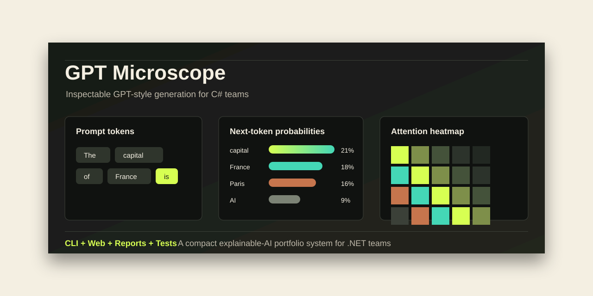

AI you can inspect
Turn abstract model behavior into visible product moments: tokens, probability bars, attention, ablation, reports, and deterministic replay.
Local-first explainable AI in C#
MiniGPTSharp is a compact, client-ready GPT Microscope: a static sales front door, a real ASP.NET Core product, a teaching CLI, JSON exports, reports, tests, and a tiny model people can actually inspect.
The capital of France is
capital -> Paris -> model -> next
What this sells
This is not just a toy model. It is a demonstration that complex AI behavior can be packaged into software that is understandable, testable, local, and beautiful enough to show a client.
Turn abstract model behavior into visible product moments: tokens, probability bars, attention, ablation, reports, and deterministic replay.
Use one tiny, readable model to teach logits, softmax, sampling, prompt context, and why generated text changes.
Clean .NET structure, CLI commands, ASP.NET Core APIs, xUnit tests, CI, docs, scripts, and release-ready positioning.
Brochure versus product
This page is a polished, fast-loading sales surface. It tells the story, previews the interface, and points people to the working repository.
The actual product remains in the repo: an ASP.NET Core app and CLI that run the real C# model locally, with inspect APIs and report export.
Interactive static preview
Toggle the trace below to feel how the local app explains model behavior. The preview is static; the downloadable app runs the same ideas against the C# model.
the capital of France is capital Paris model next token learning
Proof points
Internals are surfaced as UX, not buried in logs. That is the difference between a demo and a teaching product.
The same C# model powers CLI output, JSON exports, HTML reports, tests, and the ASP.NET Core playground.
Seeded generation and local execution make workshops safe, predictable, and easy to explain without cloud dependencies.
CI, docs, roadmap, security notes, scripts, and static hosting make the repo feel release-aware, not improvised.

Run the real app
The brochure is static. The real value is the repo: build it, generate a report, then run the ASP.NET Core GPT Microscope locally.
dotnet build .\miniGPTCSharp.sln -c Release
powershell -ExecutionPolicy Bypass -File .\scripts\demo-report.ps1
dotnet run -c Release --project .\MiniGPTCSharp.Web\MiniGPTCSharp.Web.csproj --urls http://localhost:5088